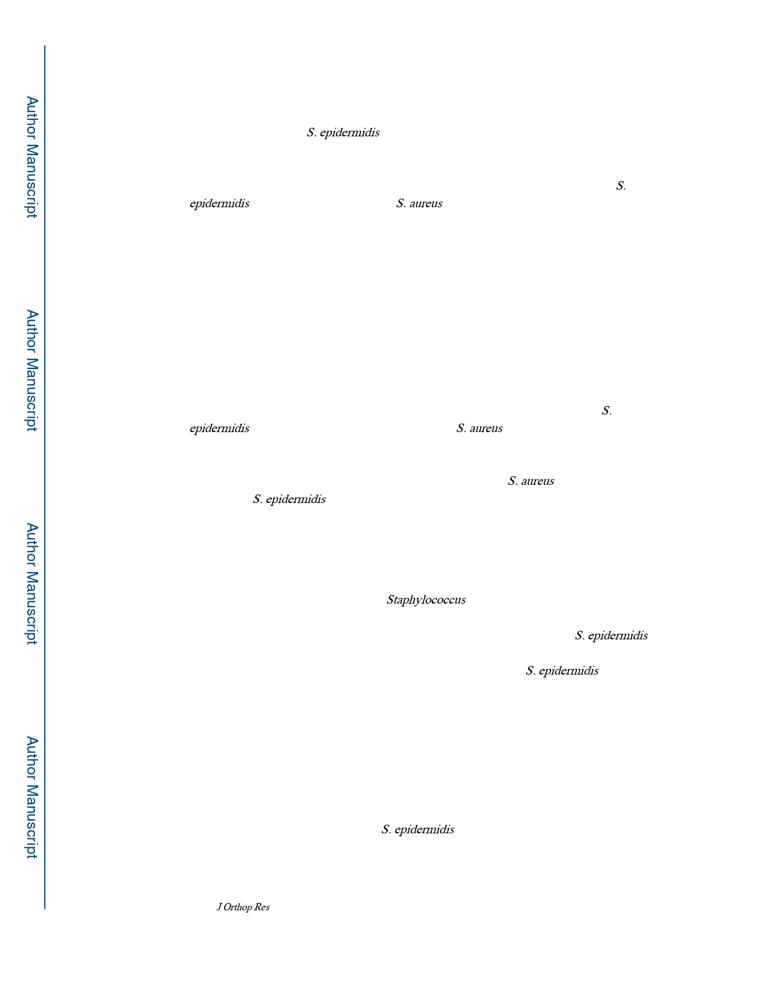

Tomizawa et al.
Page 8
Discussions
Loosening of implants is still major clinical problems in implant associated orthopaedic
infections29. Although S. epidermidis is commonly found on septic and aseptic loose
orthopaedic implants, its pathogenic role in bone infection has been debated, since it is a
constituent of healthy human microbiota, and participates in mutualistic symbiosis with the
host in this capacity30,31. Thus, we aimed to directly test the pathogenic potential of S.
epidermidis compared to highly virulent S. aureus using an established murine implant-
associated osteomyelitis model. Here we demonstrated the specific features of RP62A
infection during the process of implant-associated osteomyelitis. In contrast to USA300,
which caused severe inflammation, complete marrow necrosis, extensive bone destruction,
and abundant biofilm on the implant, RP62A failed to induce any gross pathology.
Furthermore, RP62A formed an unquantifiable amount of biofilm on the implant, and
collectively appeared as a silent infection in this model. However, RP62A infection showed
elevated gene expression related to inflammation and osteoclastogenesis, and most
importantly caused significant implant loosening.
A primary outcome measure of virulence is bacterial load in infected tissue. Thus, our
finding of significant CFUs in tissues and on the implants of RP62A infected tibiae at 7-day
and 14-day, formally establishes its pathogenesis in this murine model. However, S.
epidermidis virulence is clearly limited compared to S. aureus infections, particularly in
terms of its ability to establish osteomyelitis at 14-days, as six out of ten tissues, and four out
of ten RP62A contaminated implants failed to culture out CFUs at 14 days. This finding is
consistent with the results of Bart et al. who demonstrated that S. aureus colonization is
greater than S. epidermidis on metal implants up to 48 hours, although the initial bacterial
burden is equivalent 32.
Histologically, we observed drastic difference between USA300 and RP62A. While
evidence of new bone formation around the implant was seen in both Sterile and RP62A
groups, USA300 infected tibiae were destroyed from osteolysis, and new bone formation
was restricted to periosteal apposition. Staphylococcus abscess communities (SACs) were
also present throughout the bone marrow space and soft tissues in USA300- infected tibiae
but were never observed in RP62A-challenged tibiae. This was expected, as S. epidermidis
lacks coagulase and a von Willebrand factor-binding protein (clumping factor A), which are
required for SAC formation 33. As such, it is likely that interstitial S. epidermidis is rapidly
cleared by host immune cells and fails to establish an infectious nidus in bone marrow or in
the adjacent soft tissues. Consistently, we found no gram-positive bacterial clusters in
RP62A challenged tibiae, although this diagnostic approach is known to have an 82% of
negative predictive value for periprosthetic infection.34 In contrast, histopathologic evidence
of RP62A infection was apparent from large numbers of TRAP positive cells in remodeling
bone and fibrous tissue around the implant compared to the Sterile group (Fig. 4 G&H). This
is somewhat surprising considering no differences in μCT data were observed between the
Sterile and RP62A groups (Fig. 3). However, this is consistent with the absence of clinical
radiographic findings associated with S. epidermidis implant-associated bone infections,35
and aseptic loosening of total joint replacements.12,13 These observations are also consistent
J Orthop Res. Author manuscript; available in PMC 2021 April 01.